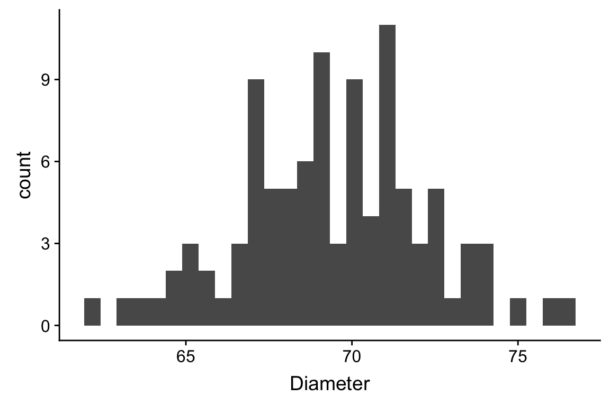
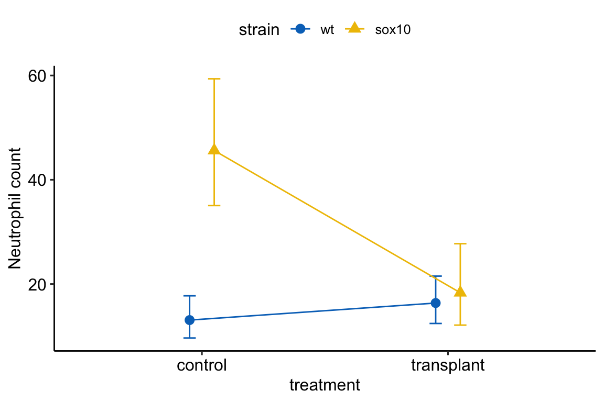
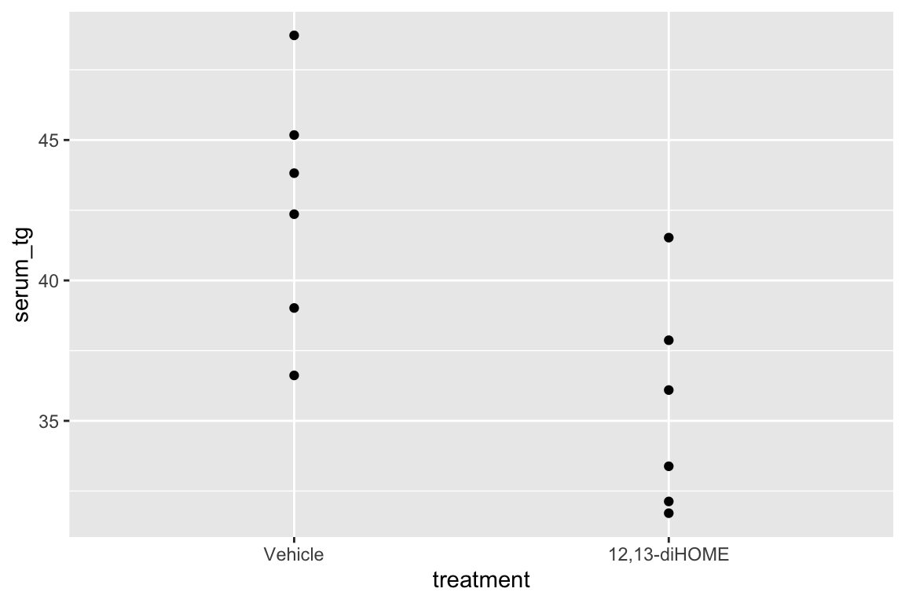

Chapter 5 Variability and Uncertainty (Standard Deviations, Standard Errors, Confidence Intervals)
Uncertainty is the stuff of science. A major goal of statistics is measuring uncertainty. What do we mean by uncertainty? Uncertainty is the error in estimating a parameter, such as the mean of a sample, or the difference in means between two experimental treatments, or the predicted response given a certain change in conditions. Uncertainty is measured with a variance or its square root, which is a standard deviation. The standard deviation of a statistic is also (and more commonly) called a standard error.
Uncertainty emerges because of variability. In any introductory statistics class, students are introduced to two measures of variability, the “standard deviation” and the “standard error.” These terms are absolutely fundamental to statistics – they are the start of everything else. Yet, many biology researchers confuse these terms and certainly, introductory students do too.
When a research biologist uses the term “standard deviation,” they are probably referring to the sample standard deviation which is a measure of the variability of a sample. When a research biologist uses the term “standard error,” they are probably referring to the standard error of a mean, but it could be the standard error of another statistics, such as a difference between means or a regression slope. An important point to remember and understand is that all standard errors are standard deviations. This will make more sense soon.
5.1 The sample standard deviation vs. the standard error of the mean
A standard deviation is the square root of the sampling variance.
5.1.1 Sample standard deviation
The sample standard deviation is a measure of the variability of a sample. For example, were we to look at a histological section of skeletal muscle we would see that the diameter of the fibers (the muscle cells) is variable. We could use imaging software to measure the diameter of a sample of 100 cells and get a distribution like this

The mean of this sample is 69.4µm and the standard deviation is 2.8 µm. The standard deviation is the square root of the variance, and so computed by
\[\begin{equation} s_y = \sqrt{\frac{\sum_{i=1}^n{(y_i - \overline{y})^2}}{n-1}} \tag{5.1} \end{equation}\]
Memorize this equation. To understand the logic of this measure of variability, note that \(y_i - \overline{y}\) is the deviation of the \(i\)th value from the sample mean, so the numerator is the sum of squared deviations. The numerator is a sum over \(n\) items and the denominator is \(n-1\) so the variance is (almost!) an averaged squared deviation. More variable samples will have bigger deviations and, therefore, bigger average squared deviations. Since the standard deviation is the square root of the variance, a standard deviation is the square root of an average squared deviation. This makes it similar in value to the averaged deviation (or average of the absolute values of the deviations since the average deviation is, by definition of a mean, zero).
5.1.1.1 Notes on the variance and standard deviation
- Variances are additive but standard deviations are not. This means that the variance of the sum of two independent (uncorrelated) random variables is simply the sum of the variances of each of the variables. This is important for many statistical analyses.
- The units of variance are the square of the original units, which is awkward for interpretation. The units of a standard deviation is the same as that of the original variable, and so is much easier to interpet.
- For variables that are approximately normally distributed, we can map the standard deviation to the quantiles of the distribution. For example, 68% of the values are within one standard deviation of the mean, 95% of the values are within two standard deviations, and 99% of the values are within three standard deviations.
5.1.2 Standard error of the mean
A standard error of a statistic is a measure of the precision of the statistic. The standard error of the mean is a measure of the precision of the estimate of the mean. The standard error of a difference in means is a measure of the precision of the estimate of the difference in means. The smaller the standard error, the more precise the estimate. The standard error of the mean (SEM) is computed as
\[\begin{equation} SEM = \frac{s_y}{\sqrt{n}} \tag{5.2} \end{equation}\]
The SEM is often denoted \(s_{\bar{y}}\) to indicate that it is a standard deviation of the mean (\(\bar{y}\)).
5.1.2.1 The standard error of the mean can be thought of as a standard deviation of an infinitely long column of re-sampled means
In what sense is a standard error a standard deviation? This is kinda weird. If we sample 100 cells in the slide of muscle tissue and compute the mean diameter, how can the mean have a standard deviation? There is only one value!
To understand how the SEM is a standard deviation, imagine that we sample \(n\) values from \(N(\mu, \sigma^2)\) (a normal distribution with mean \(\mu\) and variance \(\sigma^2\). The mean of our sample is an estimate of \(\mu\) the standard deviation of sample is an estimate of \(\sigma\)) an infinite number of times and each time, we write down the mean of the new sample. The standard deviation of this infinitely long column of means is the standard error of the mean. Our observed SEM is an estimate of this true value because our observed standard deviation is an estimate of \(\sigma\).
5.1.2.2 A standard deviation can be computed for any statistic – these are all standard errors.
The SEM is only one kind of standard error. A standard deviation can be computed for any statistic – these are all standard errors. For some statistics, such as the mean, the standard error can be computed directly using an equation, such as that for the SEM (equation (5.2)). For other statistics, a computer intensive method known as the bootstrap is necessary to compute a standard error. We will return to the bootstrap in Section 5.4.
5.1.2.3 Notes on standard errors
- The units of a standard error are the units of the measured variable.
- A standard error is proportional to sample variability (the sample standard deviation, \(s_y\)) and inversely proportional to sample size (\(n\)). Sample variability is a function of both natural variation (there really is variation in diameter among fibers in the quadriceps muscle) and measurement error (imaging software with higher resolution can measure a diameter with less error). Since the SEM is a measure of the precision of estimating a mean, this means this precision will increase (or the SEM will decrease) if 1) an investigator uses methods that reduce measurement error and 2) an investigator computes the mean from a larger sample.
- This last point (the SEM decreases with sample size) seems obvious when looking at equation (5.2), since \(n\) is in the denominator. Of course \(n\) is also in the denominator of equation (5.1) for the sample standard deviation but the standard deviation does not decrease as sample size increases. First this wouldn’t make any sense – variability is variability. A sample of 10,000 cell diameters should be no more variable than a sample of 100 cell diameters (think about if you agree with this or not). Second, this should also be obvious from equation (5.1). The standard deviation is the square root of an average and averages don’t increase with the number of things summed since both the the numerator (a sum) and denominator increase with \(n\).
5.2 Using Google Sheets to generate fake data to explore the standard error
In statistics we are interested in estimated parameters of a population using measures from a sample. The goal in this section is to use Google Sheets (or Microsoft Excel) to use fake data to discover the behavior of sampling and to gain some intuition about uncertainty using standard errors.
5.2.1 Steps
- Open Google Sheets
- In cell A1 type “mu”. mu is the greek letter \(\mu\) and is very common notation for the poplation value (the TRUE value!) of the mean of some hypothetical measure. In cell B1, insert some number as the value of \(\mu\). Any number! It can be negative or positive.
- In cell A2 type “sigma”. sigma is the greek letter \(\sigma\). \(\sigma^2\) is very common (universal!) notation for the population (TRUE) variance of some measure or parameter. Notice that the true (population) values of the mean and variance are greek letters. This is pretty standard in statistics. In cell B2, insert some positive number (standard deviations are the positive square roots of the variance).
- In cell A8 type the number 1
- In cell A9 insert the equation “=A8 + 1”. What is this equation doing? It is adding the number 1 to to the value in the cell above, so the resulting value should be 2.
- In Cell B8, insert the equation "=normsinv(rand())*$B$2 + $B$1". The first part of the equation creates a random normal variable with mean 0 and standard deviation 1. multiplication and addition transform this to a random normal variable with mean \(\mu\) and standard deviation \(\sigma\) (the values you set in cells B1 and B2).
- copy cell B8 and paste into cell B9. Now Higlight cells A9:B9 and copy the equations down to row 107. You now have 100 random variables sampled from a infinite population with mean \(\mu\) and standard deviation \(\sigma\).
- In cell A4 write “mean 10”. In cell B4 insert the equation “=average(B8:B17)”. The resulting value is the sample mean of the first 10 random variables you created. Is the mean close to \(\mu\)?
- In cell A5 write “sd 10”. In cell B5 insert the equation “stdev(B8:B17)”. The result is the sample standard deviation of the first 10 random variables. Is this close to \(\sigma\)?
- In cell A6 write “mean 100”. In cell B6 insert the equation “=average(B8:B107)”. The resulting value is the sample mean of the all 100 random variables you created. Is this mean closer to \(\mu\) than mean 10?
- In cell A7 write “sd 100”. In cell B7 insert the equation “=stdev(B8:B107)”. The resulting value is the sample standard deviation of the all 100 random variables you created. Is this SD closer to \(\sigma\) than sd 10?
The sample standard deviation is a measure of the variability of the sample. The more spread out the sample (the further each value is from the mean), the bigger the sample standard deviation. The sample standard deviation is most often simply known as “The” standard deviation, which is a bit misleading since there are many kinds of standard deviations!
Remember that your computed mean and standard deviations are estimates computed from a sample. They are estimates of the true values \(\mu\) and \(\sigma\). Explore the behavior of the sample mean and standard deviation by re-calculating the spreadsheet. In Excel, a spreadsheet is re-calculated by simultaneously pressing the command and equal key. In Google, command-R recalculates but is painfully slow. Instead, if using Google Sheets, just type the number 1 into a blank cell, and the sheet recalculates quickly. Do it again. And again.
Each time you re-calculate, a new set of random numbers are generated and the new means and standard deviations are computed. Compare mean 10 and mean 100 each re-calculation. Notice that these estimates are variable. They change with each re-calculation. How variable is mean 10 compared to mean 100? The variability of the estimate of the mean is a measure of uncertainty in the estimate. Are we more uncertain with mean 10 or with mean 100? This variability is measured by a standard deviation. This standard deviation of the mean is also called the standard error of the mean. Many researchers are loose with terms and use “The” standard error to mean the standard error of the mean, even though there are many kinds of standard errors. In general, “standard error”" is abbreviated as “SE.” Sometimes “standard error of the mean” is specifically abbreviated to “SEM.”
The standard error of the mean is a measure of the precision in estimating the mean. The smaller the value the more precise the estimate. The standard error of the mean is a standard deviation of the mean. This is kinda weird. If we sample a population one time and compute a mean, how can the mean have a standard deviation? There is only one value! And we compute this value using the sample standard deviation: \(SEM = \frac{SD}{\sqrt{N}}\). To understand how the SEM is a standard deviation, Imagine recalculating the spread sheet an infinite number of times and each time, you write down the newly computed mean. The standard error of the mean is the standard deviation of this infinitely long column of means.
5.3 Using R to generate fake data to explore the standard error
note that I use “standard deviation” to refer to the sample standard deviation and “standard error” to refer to the standard error of the mean (again, we can compute standard errors as a standard deviation of any kind of estimate)
5.3.1 part I
In the exercise above, you used Google Sheets to generate \(p\) columns of fake data. Each column had \(n\) elements, so the matrix of fake data was \(n \times m\) (it is standard in most fields to specify a matrix as rows by columns). This is much easier to do in R and how much grows exponentially as the size of the matrix grows.
To start, we just generate a \(n \times p\) matrix of normal random numbers.
# R script to gain some intuition about standard deviation (sd) and standard error (se)
# you will probably need to install ggplot2 using library(ggplot2)
n <- 6 # sample size
p <- 100 # number of columns of fake data to generate
fake_data <- matrix(rnorm(n*p, mean=0, sd=1), nrow=n, ncol=p) # create a matrixthe 3rd line is the cool thing about R. In one line I’m creating a dataset with \(n\) rows and \(p\) columns. Each column is a sample of the standard normal distribution which by definition has mean zero and standard deviation of 1. But, and this is important, any sample from this distribution will not have exactly mean zero and standard deviation of 1, because it’s a sample, the mean and standard deviation will have some small errror from the truth. The line has two parts to it: first I’m using the function “rnorm” (for random normal) to create a vector of n*m random, normal deviates (draws from the random normal distribution) and then I’m organizing these into a matrix (using the function “matrix”)
To compute the vector of means, standard deviations, and standard errors for each column of fake_data, use the apply() function.
means <- apply(fake_data,2,mean) # the apply function is super useful
sds <- apply(fake_data,2,sd)
sems <- sds/sqrt(n)apply() is a workhorse in many R scripts and is often used in R scripts in place of a for-loop (see below) because it takes fewer lines of code.
The SEM is the standard deviation of the mean, so let’s see if the standard deviation of the means is close to the true standard error. We sampled from a normal distribution with SD=1 so the true standard is
## [1] 0.4082483and the standard deviation of the \(p\) means is
## [1] 0.3731974Questions
- how close is
sd(means)to the true SE? - change p above to 1000. Now how close is sd(means) to the true SE?
- change p above to 10,000. Now how close is sd(means) to the true SE?
5.3.2 part II - means
This is a visualization of the spread, or variability, of the sampled means

Compute the mean of the means
## [1] -0.039961Questions
- Remember that the true mean is zero. How close, in general, are the sampled means to the true mean. How variable are the means? How is this quantified?
- change n to 100, then replot. Are the means, in general, closer to the true mean? How variable are the means now?
- Is the mean estimated with \(n=100\) closer to the truth, in general, then the mean estimated with \(n=6\)?
- Redo with \(n=10000\)
5.3.3 part III - how do SD and SE change as sample size (n) increases?
## [1] 1.017144Questions
- what is the mean of the standard deviations when n=6 (set p=1000)
- what is the mean of the standard deviations when n=100 (set p=1000)
- when n = 1000? (set p=1000)
- when n = 10000? (set p=1000)
- how does the mean of the standard deviations change as n increases (does it get smaller? or stay about the same size)
- repeat the above with SEM
## [1] 0.4152472Congratulations, you have just done a Monte Carlo simulation!
5.3.4 Part IV – Generating fake data with for-loops
A for-loop is used to iterate a computation.
n <- 6 # sample size
n_iter <- 10^5 # number of iterations of loop (equivalent to p)
means <- numeric(n_iter)
sds <- numeric(n_iter)
sems <- numeric(n_iter)
for(i in 1:n_iter){
y <- rnorm(n) # mean=0 and sd=1 are default so not necessary to specify
means[i] <- mean(y)
sds[i] <- sd(y)
sems[i] <- sd(y)/sqrt(n)
}
sd(means)## [1] 0.4090702## [1] 0.3883867Questions
- What do
sd(means)andmean(sems)converge to asn_iteris increased from 100 to 1000 to 10,000? - Do they converge to the same number?
- Should they?
- What is the correct number?
Question number 4 is asking what is E(SEM), the “expected standard error of the mean”. There is a very easy formula to compute this. What is it?
5.4 Bootstrapped standard errors
The bootstrap is certainly one of the most valuable tools invented in modern statistics. But, it’s not only a useful tool for applied statistics, it’s a useful tool for understanding statistics. Playing with a parametric bootstrap will almost certainly induce an “aha, so that’s what statisticians mean by …” moment.
To understand the bootstrap, let’s review a standard error. A parametric standard error of a mean is the expected standard deviation of an infinite number of means. A standard error of any statistic is the expected standard deviation of that statistic. I highlight expected to emphasize that parametric standard errors assume a certain distribution (not necessarily a Normal distribution, although the equation for the SEM in Equation (5.2) assumes a normal distribution if the standard deviation is computed as in Equation (??)).
A bootstrapped standard error of a statistic is the empirical standard deviation of the statistic from a finite number of samples. The basic algorithm for a bootstrap is (here “the statistic” is the mean of the sample)
- sample \(n\) values from a probability distribution
- compute the mean
- repeat step 1 and 2 many times
- for a bootstrapped standard error, compute the standard deviation of the set of means saved from each iteration of steps 1 and 2.
The probability distribution can come from two sources:
- A parametric bootstrap uses samples from a parametric probability distribution, such as a Normal distribution or a poisson distribution (remember, these are “parametric” because the distribution is completely described by a set of parameters). A good question is why bother? In general, one would use a parametric bootstrap for a statistic for which there is no formula for the standard error, but the underlying data come from a parametric probability distribution.
- A non-parametric bootstrap uses resamples from the data. The data are resampled with replacement. “Resample with replacement” means to sample \(n\) times from the full set of observed values. If we were to do this manually, we would i) write down each value of the original sample on its own piece of paper and throw all pieces into a hat. ii) pick a paper from the hat, add its value to sample \(i\), and return the paper to the hat. iii) repeat step ii \(n\) times, where \(n\) is the original sample size. The new sample contains some values multiple times (papers that were picked out of the hat more than once) and is missing some values (papers that were not picked out in any of the \(n\) picks). A good question is, why bother? A non-parametric bootstrap assumes no specific parametric probability distribution but it does assume the distributio of the observed sample is a good approximation of the true population distribution (in which case, the probability of picking a certain value is a good approximation to the true probability).
5.4.1 An example of bootstrapped standard errors using vole data
Let’s use the vole data to explore the bootstrap and “resampling”. The data are archived at Dryad Repository. Use the script in Section ?? to wrangle the data into a usable format.
- URL: https://datadryad.org//resource/doi:10.5061/dryad.31cc4
- file: RSBL-2013-0432 vole data.xlsx
- sheet: COLD VOLES LIFESPAN
The data are the measured lifespans of the short-tailed field vole (Microtus agrestis) under three different experimental treatments: vitamin E supplementation, vitamin C supplementation, and control (no vitamin supplementation). Vitamins C and E are antioxidants, which are thought to be protective of basic cell function since they bind to the cell-damaging reactive oxygen species that result from cell metabolism.
Let’s compute the standard error of the mean of the control group lifespan using both a parametric and a nonparametric bootstrap. To implement the algorithm above using easy-to-understand code, I’ll first extract the set of lifespan values for the control group and assign it to its own variable.
[treatment=="control", ] indexes the rows (that is, returns the row numbers) that satisfy the condtion treatment = "control". Or, put another way, it selects the subset of rows that contain the value “control” in the column “treatment”. [, lifespan] indexes the column labeled “lifespan”. Combined, these two indices extract the values of the column “lifespan” in the subset of rows that contain the value “control” in the column “treatment”. The resulting vector of values is assigned to the variable “control_voles”.
5.4.1.1 parametric bootstrap
# we'll use these as parameters for parametric bootstrap
n <- length(control_voles)
mu <- mean(control_voles)
sigma <- sd(control_voles)
n_iter <- 1000 # number of bootstrap iterations, or p
means <- numeric(n_iter) # we will save the means each iteration to this
for(iter in 1:n_iter){ # this line sets up the number of iterations, p
fake_sample <- rnorm(n, mean=mu, sd=sigma)
means[iter] <- mean(fake_sample)
}
(se_para_boot <- sd(means))## [1] 30.497655.4.1.2 non-parametric bootstrap
n_iter <- 1000 # number of bootstrap iterations, or p
means <- numeric(n_iter) # we will save the means each iteration to this
inc <- 1:n # inc indexes the elements to sample. By setting inc to 1:n prior to the loop, the first mean that is computed is the observed mean
for(iter in 1:n_iter){ # this line sets up the number of iterations, p
means[iter] <- mean(control_voles[inc]) # inc is the set of rows to include in the computation of the mean.
inc <- sample(1:n, replace=TRUE) # re-sample for the next iteration
}
(se_np_boot <- sd(means))## [1] 32.47356The parametric bootstrapped SEM is 30.5. The non-parametric bootstrapped SEM is 32.47. Run these several times to get a sense how much variation there is in the bootstrapped estimate of the SEM given the number of iterations. Compute the parametric standard error using equation (5.2) and compare to the bootstrapped values.
5.5 Confidence Interval
Here I introduce a confidence interval of a sample mean but the concept is easily generalized to any parameter. The mean of the Control voles is 503.4 and the SE of the mean is 31.61. The SE is used to construct the lower and upper boundary of a “1 - \(\alpha\)” confidence interval using lower <- mean(x) + qt(alpha/2, df = n-1)*se(x) and upper <- mean(x) + qt(1-(alpha/2), df = n-1)*se(x).
## [1] 440.0464## [1] 566.7393The function qt maps a probability to a t-value – this is the opposite of a t test, which maps a t-value to a probability. Sending \(\alpha/2\) and \(1 - \alpha/2\) to qt returns the bounds of the confidence intereval on a standardized scale. Multiplying these bounds by the standard error of the control vole lifespan pops the bounds onto the scale of the control vole lifespans.
We can check our manual computation with the linear model
## 2.5 % 97.5 %
## (Intercept) 440.0464 566.73935.5.1 Interpretation of a confidence interval
Okay, so what is a confidence interval? A confidence interval of the mean is a measure of the uncertainty in the estimate of the mean. A 95% confidence interval has a 95% probability (in the sense of long-run frequency) of containing the true mean. It is not correct to state that “there is a 95% probability that the true mean lies within the interval”. These sound the same but they are two different probabilities. The first (correct interpretation) is a probability of a procedure – if we re-do this procedure (sample data, compute the mean, and compute a 95% CI), 95% of these CIs will contain the true mean. The second (incorrect interpretation) is a probability that a parameter (\(\mu\), the true mean) lies within some range. The second (incorrect) interepretation of the CI is correct only if we also assume that any value of the mean is equally probable (Greenland xxx), an assumption that is absurd for almost any data.
Perhaps a more useful interpretation of a confidence interval is, a confidence interval contains the range of true means that are compatible with the data, in the sense that a \(t\)-test would not reject the null hypothesis of a difference between the estimate and any value within the interval (this interpretation does not imply anything about the true value) (Greenland xxx). The “compatibility” interpretation is very useful because it implies that values outside of the interval are less compatible with the data.
Let’s look at the confidence intervals of all three vole groups in light of the “compatibility” interpretation.
vole_ci <- vole[, .(lifespan = mean(lifespan),
lo = mean(lifespan) + sd(lifespan)/sqrt(.N)*qt(.025, (.N-1)),
up = mean(lifespan) + sd(lifespan)/sqrt(.N)*qt(.975, (.N-1)),
N = .N),
by = .(treatment)]
ggplot(data=vole_ci, aes(x=treatment, y=lifespan)) +
geom_point() +
geom_errorbar(aes(x=treatment, ymin=lo, ymax=up),
width=0.1) +
NULL